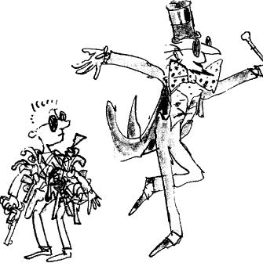
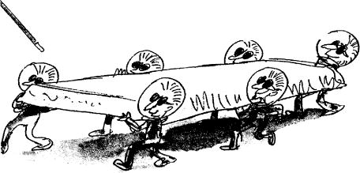

The Teavee family, together with Charlie and Grandpa Joe, stepped out of the lift into a room so dazzlingly bright and dazzlingly white that they screwed up their eyes in pain and stopped walking. Mr Wonka handed each of them a pair of dark glasses and said, ‘Put these on quick! And don’t take them off in here whatever you do! This light could blind you!’
As soon as Charlie had his dark glasses on, he was able to look around him in comfort. He saw a long narrow room. The room was painted white all over. Even the floor was white, and there wasn’t a speck of dust anywhere. From the ceiling, huge lamps hung down and bathed the room in a brilliant blue-white light. The room was completely bare except at the far ends. At one of these ends there was an enormous camera on wheels, and a whole army of Oompa-Loompas was clustering around it, oiling its joints and adjusting its knobs and polishing its great glass lens. The Oompa-Loompas were all dressed in the most extraordinary way. They were wearing bright-red space suits, complete with helmets and goggles – at least they looked like space suits – and they were working in complete silence. Watching them, Charlie experienced a queer sense of danger. There was something dangerous about this whole business, and the Oompa-Loompas knew it. There was no chattering or singing among them here, and they moved about over the huge black camera slowly and carefully in their scarlet space suits.
At the other end of the room, about fifty paces away from the camera, a single Oompa-Loompa (also wearing a space suit) was sitting at a black table gazing at the screen of a very large television set.
‘Here we go!’ cried Mr Wonka, hopping up and down with excitement. ‘This is the Testing Room for my very latest and greatest invention – Television Chocolate!’
‘But what is Television Chocolate?’ asked Mike Teavee.
‘Good heavens, child, stop interrupting me!’ said Mr Wonka. ‘It works by television. I don’t like television myself. I suppose it’s all right in small doses, but children never seem to be able to take it in small doses. They want to sit there all day long staring and staring at the screen…’
‘That’s me!’ said Mike Teavee.
‘Shut up!’ said Mr Teavee.
‘Thank you,’ said Mr Wonka. T shall now tell you how this amazing television set of mine works. But first of all, do you know how ordinary television works? It is very simple. At one end, where the picture is being taken, you have a large ciné camera and you start photographing something. The photographs are then split up into millions of tiny little pieces which are so small that you can’t see them, and these little pieces are shot out into the sky by electricity. In the sky, they go whizzing around all over the place until suddenly they hit the antenna on the roof of somebody’s house. They then go flashing down the wire that leads right into the back of the television set, and in there they get jiggled and joggled around until at last every single one of those millions of tiny pieces is fitted back into its right place (just like a jigsaw puzzle), and presto! – the photograph appears on the screen…’
‘That isn’t exactly how it works,’ Mike Teavee said.
‘I am a little deaf in my left ear,’ Mr Wonka said. ‘You must forgive me if I don’t hear everything you say.’
‘I said, that isn’t exactly how it works!’ shouted Mike Teavee.
‘You’re a nice boy,’ Mr Wonka said, ‘but you talk too much. Now then! The very first time I saw ordinary television working, I was struck by a tremendous idea. “Look here!” I shouted. “If these people can break up a photograph into millions of pieces and send the pieces whizzing through the air and then put them together again at the other end, why can’t I do the same thing with a bar of chocolate? Why can’t I send a real bar of chocolate whizzing through the air in tiny pieces and then put the pieces together at the other end, all ready to be eaten?” ’
‘Impossible!’ said Mike Teavee.
‘You think so?’ cried Mr Wonka. ‘Well, watch this! I shall now send a bar of my very best chocolate from one end of this room to the other by television! Get ready, there! Bring in the chocolate!’
Immediately, six Oompa-Loompas marched forward carrying on their shoulders the most enormous bar of chocolate Charlie had ever seen. It was about the size of the mattress he slept on at home.
‘It has to be big,’ Mr Wonka explained, ‘because whenever you send something by television, it always comes out much smaller than it was when it went in. Even with ordinary television, when you photograph a big man, he never comes out on your screen any taller than a pencil, does he? Here we go, then! Get ready! No, no! Stop! Hold everything! You there! Mike Teavee! Stand back! You’re too close to the camera! There are dangerous rays coming out of that thing! They could break you up into a million tiny pieces in one second! That’s why the Oompa-Loompas are wearing space suits! The suits protect them! All right! That’s better! Now, then! Switch on!’
One of the Oompa-Loompas caught hold of a large switch and pulled it down.
There was a blinding flash.
‘The chocolate’s gone!’ shouted Grandpa Joe, waving his arms.
He was quite right! The whole enormous bar of chocolate had disappeared completely into thin air!
‘It’s on its way!’ cried Mr Wonka. ‘It is now rushing through the air above our heads in a million tiny pieces. Quick! Come over here!’ He dashed over to the other end of the room where the large television set was standing, and the others followed him. ‘Watch the screen!’ he cried. ‘Here it comes! Look!’
The screen flickered and lit up. Then suddenly, a small bar of chocolate appeared in the middle of the screen.
‘Take it!’ shouted Mr Wonka, growing more and more excited.
‘How can you take it?’ asked Mike Teavee, laughing. ‘It’s just a picture on a television screen!’
‘Charlie Bucket!’ cried Mr Wonka. ‘You take it! Reach out and grab it!’
Charlie put out his hand and touched the screen, and suddenly, miraculously, the bar of chocolate came away in his fingers. He was so surprised he nearly dropped it.
‘Eat it!’ shouted Mr Wonka. ‘Go on and eat it! It’ll be delicious! It’s the same bar! It’s got smaller on the journey, that’s all!’
‘It’s absolutely fantastic!’ gasped Grandpa Joe. ‘It’s… it’s… it’s a miracle!’
‘Just imagine,’ cried Mr Wonka, ‘when I start using this across the country… you’ll be sitting at home watching television and suddenly a commercial will flash on to the screen and a voice will say, “EAT WONKA’S CHOCOLATES! THEY’RE THE BEST IN THE WORLD! IF YOU DON’T BELIEVE US, TRY ONE FOR YOURSELF – NOW!” And you simply reach out and take one! How about that, eh?’
‘Terrific!’ cried Grandpa Joe. ‘It will change the world!’